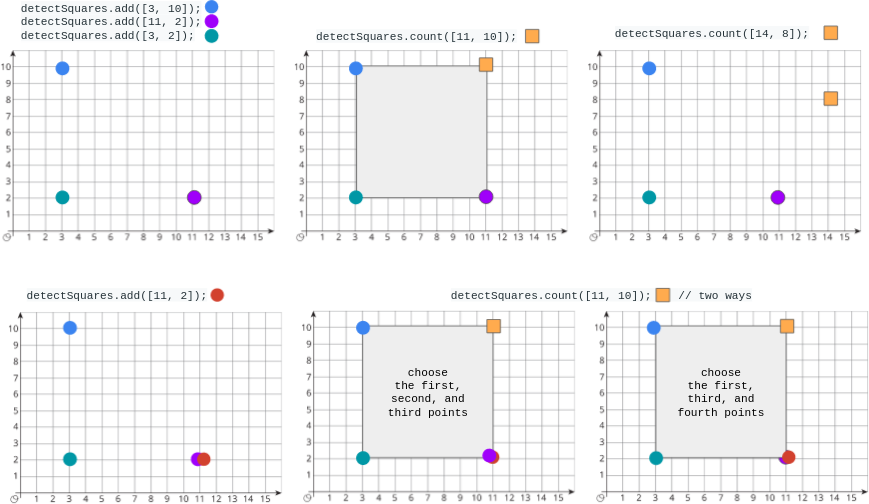

| Category | Difficulty | Likes | Dislikes |
|---|---|---|---|
| Algorithms | Medium | 1002 | 256 |
array | hash-table | design | counting
google | facebook | amazon
You are given a stream of points on the X-Y plane. Design an algorithm that:
An axis-aligned square is a square whose edges are all the same length and are either parallel or perpendicular to the x-axis and y-axis.
Implement the DetectSquares class:
DetectSquares() Initializes the object with an empty data structure.void add(int[] point) Adds a new point point = [x, y] to the data structure.int count(int[] point) Counts the number of ways to form axis-aligned squares with point point = [x, y] as described above.
Example 1:

Input
["DetectSquares", "add", "add", "add", "count", "count", "add", "count"]
[[], [[3, 10]], [[11, 2]], [[3, 2]], [[11, 10]], [[14, 8]], [[11, 2]], [[11, 10]]]
Output
[null, null, null, null, 1, 0, null, 2]
Explanation
DetectSquares detectSquares = new DetectSquares();
detectSquares.add([3, 10]);
detectSquares.add([11, 2]);
detectSquares.add([3, 2]);
detectSquares.count([11, 10]); // return 1. You can choose:
// - The first, second, and third points
detectSquares.count([14, 8]); // return 0. The query point cannot form a square with any points in the data structure.
detectSquares.add([11, 2]); // Adding duplicate points is allowed.
detectSquares.count([11, 10]); // return 2. You can choose:
// - The first, second, and third points
// - The first, third, and fourth points
Constraints:
point.length == 20 <= x, y <= 10003000 calls in total will be made to add and count.